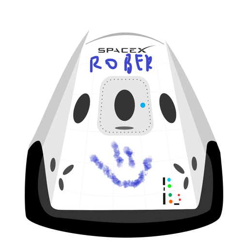

Hyperblog
Tu blog de confianza
Aquí vamos a hacer un blog post
Y este es el párrafo de inicio donde vamos a explicar las cosas increíbles que se pueden hacer con ramas.

Los blogs son la mejor forma de compartir información y tus ideas. Mucho mas que ir a conferencias o salir en Youtube. Excepto si eres un rockstar. Pero estadísticamente no lo eres. Por ahora. Bienvenidos a este blog! Tomen asiento.
Suscríbete y dale like